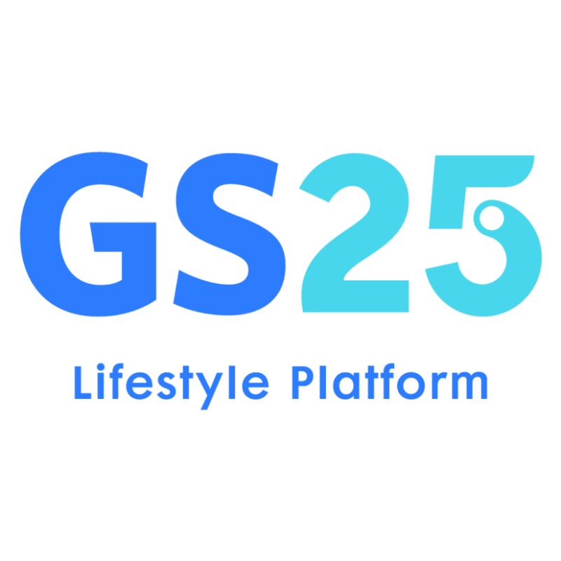

Nguyen Tuan Anh

VIE

ENG
Abstract
A son of Ha Tinh, but I have said goodbye to that land to move to Binh Duong to live and study. As a university student, I always try to learn many new things, improve myself every day (if I am not lazy and play games too much). Every day I go on the journey to become a website programmer. Although at present, my position on that path is still just like laying a few bricks to build a house, but I promise myself to try harder, try harder to continue on that journey.
About me
Name:
Nguyen Tuan Anh
Sex:
Male
Birth:
06-10-2005
Hometown:
Cam Quang, Cam Xuyen, Ha Tinh, Viet Nam
Resident:
Binh Nham, Thuan An, Binh Duong
About my favorites
Badminton
Chess
Play with cat

PHI PHAIII
Trash
About my works before
I worked as a fruit seller for my brother for about a year when I was 16 and 17. With the money I earned, I was able to buy my first pair of glasses – my first meaningful reward from hard work, as it improved my eyesight and changed my life a little
I am currently working as a staff at a convenience store - GS25. I have been working since December 2024. Through this, I have practiced my communication skills with customers and sales.
Skill
Program Language
Html
75%
Css
55%
JavaScript
40%
Python
35%
C#
45%
SQL
40%

Although not too difficult, I still haven't fully grasped the meaning and applications of all the tags. However, I am very serious about learning and applying it in practice.
CSS requires a lot of practice and reference materials. I learn through QuickRef and W3Schools, but I’m not sure if I have mastered everything yet. Currently, I haven’t studied any frameworks.

A truly different programming language. I learn JavaScript through W3Schools and other resources to grasp the basic syntax, aiming to build a complete front-end. At first glance, it seems simple, but the deeper I go, the more I realize its unique and important aspects.
I studied C# with object-oriented programming—a challenging but rewarding experience that helped me achieve a good grade in my final project. This journey made me realize the importance of continuous learning to improve my skills.

Python was the first language I learned at university (before that, I studied Pascal). I have covered the basics, such as variables, arrays, and functions, but I haven’t learned about working with text files. Additionally, I studied structured programming with Python, but due to inadequate revision, my final score was only average.
In my third semester of the first year, I started learning SQL. Before practicing, I had to go through a lot of theory, but I regret not exploring it more deeply. I have learned the basics, including creating and using databases, managing tables, and performing queries such as single queries, nested queries, and multi-condition queries.
Other skill
Office informatics:
Proficient in basic Word. Prepare content thoroughly and proficiently use Powerpoint.
Soft skills:
Basic presentation, problem analysis and appropriate solutions.
English:
The level is still at an average level, automatically scoring the body level B1, can continue basic communication with foreigners, but still needs improvement in listening.
Education
School:
Binh Duong University
Course:
2023-2027
Faculty:
Information technology, AI and Artificial intelligence
Major:
Web Developer
GPA:
3.56 (the first year)
>> see more
Target
+ Become a Front-End website programmer, perfect basic languages(HTML, CSS, JavaScript). Learn about FrameWork, the goal of building and designing a complete front-end website
+ After finishing studying Front-end, I will try to study for an English certificate (possibly Toiec) and continue to strive for Backend and API to become a FullStack Web Developer.
+ The above goals are only predetermined, so to achieve them, you need to try to study and improve your knowledge more.
Project
Manage supermarket purchasing activities
>>Project detail
Contact me
My info
C299N, Binh Hoa, Binh Nham, Thuan An, Binh Duong
23050118@student.bdu.edu.vn
032 888 4320